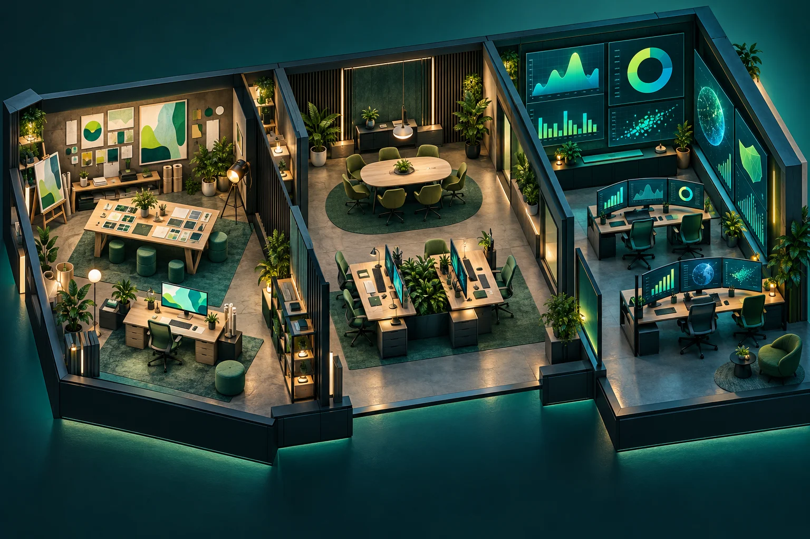

Jocul devine un instrument de lucru.
Growth Quest combină simularea unei agenții cu instrumente pentru marketing, relația cu clientul și analiza rezultatelor.

Problemă
Învățarea și organizarea proiectelor erau separate. Un joc putea genera scoruri, dar nu și materiale reutilizabile.
Decizie
Un singur flux leagă scenariul, brief-ul, calendarul, CRM-ul și raportul. Datele simulate sunt etichetate.
Rezultat
Dosare editabile, instrumente locale și exerciții progresive. Rezultatele financiare afișate provin din datele introduse sau din simulare.
Dovezi
Verificări pentru calcule, importuri, backupuri, progres, transfer fără duplicate și păstrarea modului Lucrează.
Testarea pe telefon real rămâne neconfirmată.
Utilizări
Practică individuală, atelier educațional, planificarea unei campanii, CRM local și pregătirea unui studiu de caz. Pachetele de scenarii, șabloanele și rapoartele pot fi exportate pentru reutilizare.
Aceasta este copia publică din portofoliu. Datele tale rămân locale în browser; versiunea privată Sites are o adresă și un spațiu de stocare separate.
The game becomes a working tool.
Growth Quest combines an agency simulation with tools for marketing, customer relationships and result analysis.
Problem
Learning and project organization were separate. A game could generate scores, but not reusable deliverables.
Decision
One flow connects scenario, brief, calendar, CRM and report. Simulated data is labelled.
Result
Editable dossiers, local tools and progressive exercises. Financial results use entered data or simulation.
Evidence
Checks cover calculations, imports, backups, progress, duplicate-free transfer and Work mode preservation.
Real-phone testing remains unconfirmed.
Uses
Individual practice, educational workshops, campaign planning, local CRM and case-study preparation. Scenario packs, templates and reports can be exported for reuse.
This is the public portfolio copy. Your data remains local in the browser; the private Sites version uses a separate address and storage.